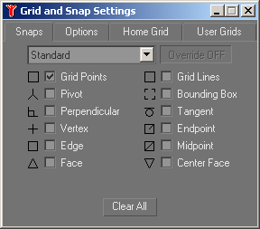

Les Snaps

Les snaps sont des aides au modélisateur. Ils lui servent à dessiner de façon précise. Les modes de snaps sont commandés par des boutons à bascule (toggles).
Snaps 2D, 2,5D et 3D
Symbolisés par un aimant, les snaps 2D, 2,5D et 3D servent à aimanter le curseur de la souris lors de la création d'objets ou de translations. Cette aimantation se fait sur un point exact ou sa projection sur l'écran de gMax en fonction du snap sélectionné.
Angle Snap Toggle
Ce snap permet de fixer des taux de rotation fixes.
Percent Snap
Ce snap permet de fixer des taux de proportion fixes. Utilisé par les transformations d'échelle.
Le menu Grid and Snap Settings
En cliquant droit sur l'icône du Snap 3D, le menu s'ouvre à l'onglet Snaps.
Les cases à cocher dans ce menu correspondent à des points particuliers sur lesquels le curseur peut être aimanté. Dans la pratique, les plus utiles seront Grid Points, Vertex, Endpoint et Midpoint.
En cliquant droit sur les icônes Angle Snap ou Percent Snap, le menu s'ouvre à l'onglet Options.
Ce menu offre différents réglages comme la taille du marqueur de Snap 3D, la taille en pixel de la zone où le curseur de la souris sera attiré. On peut régler l'angle de rotation en degré du Angle Snap ou bien le pourcentage du Percent Snap. Enfin, par défaut, le Snap 3D ne prend pas en compte les contraintes d'axes lors des translations sauf si on lui impose en cochant la case Translation/Use Axis Constraints.
L'onglet Home Grid permet essentiellement de paramétrer la finesse du maillage de la grille. La valeur par défaut vaut 10 mètres. Pour modéliser un véhicule de chemin de fer, une valeur de 0,5 mètres ou inférieure sera plus pratique.
Panneaux de commande | Retour Tutoriaux | Retour Interface gmax